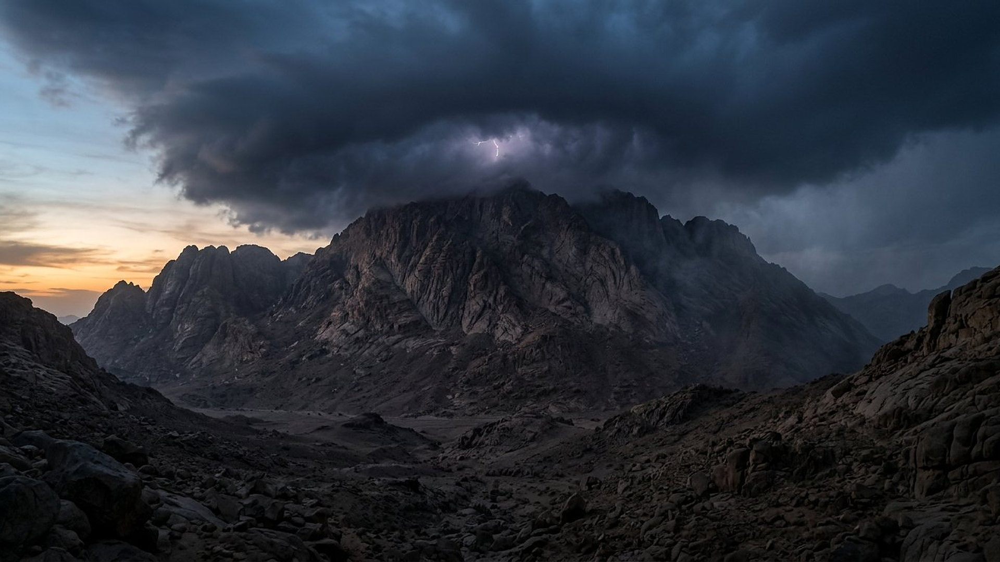
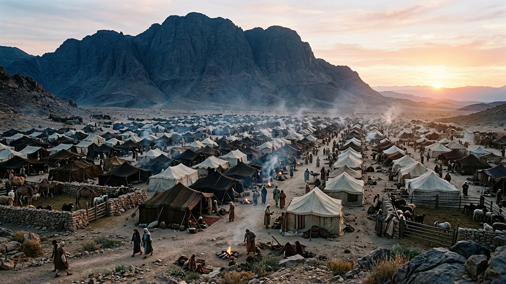
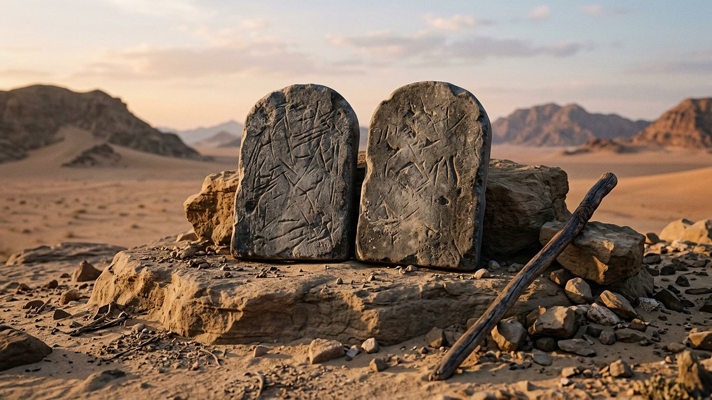

Salle 47 — Exode 19-20 ACCOMPLIE
Le Sinaï, l’alliance et les dix paroles
« Si vous écoutez attentivement ma voix et si vous gardez mon alliance, vous serez mon bien propre parmi tous les peuples, et vous serez pour moi un royaume de prêtres et une nation sainte. » — Exode 19:5-6 (traduction personnelle fidèle)
Reconstitution numérique — la montagne sous la nuée : aucun être n’est figuré au sommet.
Une proposition faite à tout un peuple
Trois mois après la sortie d’Égypte (salle 46), le campement s’installe face à une montagne du désert du Sinaï. Là, selon le livre de l’Exode, Jéhovah fait à Israël une proposition d’alliance : s’il écoute sa voix, il deviendra son « bien propre », un « royaume de prêtres » et une nation sainte. Le peuple répond d’une seule voix — « tout ce que Jéhovah a dit, nous le ferons » (Exode 19:8) — avant même d’entendre le détail des paroles. Trois jours de préparation plus tard, la montagne est couverte de nuée, de tonnerres et d’un son de trompe croissant, et les dix paroles sont proclamées (Exode 19 et 20).
Dans la lecture retenue par ce musée, le Sinaï est le contrat de naissance de la nation : la libération de la Pâque reçoit une constitution. Les dix paroles ne commencent pas par une menace, mais par un rappel — « je suis Jéhovah ton Dieu, qui t’ai fait sortir du pays d’Égypte » (Exode 20:2) : la fidélité demandée répond à une libération déjà accomplie. Le site du Sinaï, sa date et l’histoire de la rédaction du texte sont présentés ci-dessous avec les débats des spécialistes, sans les dissimuler.
Le récit en cinq temps
De la proposition au pied de la montagne, avancez d’une station à l’autre.

Le banc des preuves : une stèle comparée, un lieu discuté
DÉBATTU
La stèle de Hammurabi : parenté de forme, filiation débattue (EV-56)
Aux collections du Louvre est conservée une grande stèle de basalte noir (inventaire Sb 8) qui porte les lois du roi Hammurabi (en akkadien ; translittération : Ḫammurabi), souverain de Babylone au XVIIIe siècle avant notre ère selon la chronologie conventionnelle. En haut de la stèle, le roi se tient debout devant le dieu Shamash assis. Son recueil de décisions, rédigé en écriture cunéiforme, partage avec les lois de l’Exode une forme casuistique (« si un homme… ») et des sujets voisins — blessures, dépôts, salaires, animaux. Les spécialistes débattent de la parenté : tradition juridique commune du Proche-Orient ancien plutôt qu’emprunt direct démontré. Une différence demeure souvent relevée : au Sinaï, la loi est présentée comme la parole d’alliance adressée à tout un peuple libéré, non comme le code promulgué par un roi.
LECTURE PROPHÉTIQUE
Un « royaume de prêtres », relu des siècles plus tard
La promesse du Sinaï dépasse le campement : l’apôtre Pierre reprend ses mots pour des fidèles d’une autre époque — « une prêtrise royale, une nation sainte, un peuple acquis » (1 Pierre 2:9) — et la Révélation parle de rois et de prêtres associés au Christ (Révélation 5:10). Le musée suit cette correspondance annoncée-reprise, qui relie cette salle au royaume de Dieu de la salle 40, sans confondre l’alliance du Sinaï avec celle qui la suit dans le récit chrétien.
DÉBATTU
Où est le mont Sinaï ? Ce que les spécialistes discutent
L’identification du « mont Horeb » ou « mont Sinaï » n’est pas assurée : le massif traditionnellement vénéré dans le sud de la péninsule du Sinaï (en arabe, translittération : Jabal Mūsā, « montagne de Moïse ») repose sur une tradition chrétienne ancienne, mais d’autres emplacements, dans la péninsule ou au nord-ouest de l’Arabie, ont été proposés, sans preuve décisive. De même, la rédaction des récits de l’Exode et la forme exacte des dix paroles (dont la numérotation varie selon les traditions) font l’objet de travaux critiques. La salle suit le récit et signale ces débats, au lieu de planter un drapeau sur un sommet.
Quatre clés pour bien lire le Sinaï
1. Une alliance proposée, acceptée
La proposition précède les obligations, et le peuple consent avant la proclamation (« tout ce que Jéhovah a dit, nous le ferons », 19:8), puis confirme après l’avoir entendue. Dans la grammaire du musée — prescience et liberté —, l’alliance n’est pas un destin imposé : c’est un engagement répondu.
2. Des paroles qui commencent par une libération
« Je suis Jéhovah ton Dieu, qui t’ai fait sortir » (20:2) : l’obéissance demandée est une réponse à un salut déjà donné, pas le prix pour l’obtenir. L’ordre compte : d’abord la Pâque (salle 46), ensuite le Sinaï.
3. Une loi qui protège les faibles du campement
Au-delà des dix paroles, les ordonnances qui suivent encadrent le salaire de l’ouvrier, le dépôt, l’étranger, la veuve et l’orphelin (Exode 22, résumé sobre). L’alliance dessine une société, pas seulement un culte — ce que la stèle de Hammurabi permet de comparer, sans fusionner les deux recueils.
4. Une étape vers une alliance nouvelle
Dans la lecture du musée, l’alliance du Sinaï a un rôle de cadre et de « pédagogue » (Galates 3:24) : elle garde et instruit le peuple jusqu’au Christ, dont le sang fonde l’« alliance nouvelle » annoncée dès Jérémie 31:31-33. La salle 44 (la rançon) en montre le prix ; celle-ci en montre le préambule.
Prescience n’est pas fatalité — un engagement consenti
Jéhovah annonce ce qu’Israël deviendra si le peuple écoute (19:5) : la promesse est conditionnelle, la réponse est unanime et libre, et l’histoire qui suit racontera fidélités et écarts. La prescience propose, la liberté dispose — au pied de la montagne comme dans tout le musée.

Salle 46 : la première Pâque, la libération · Salle 29 : le Tabernacle né de l’alliance · Salle 40 : du « royaume de prêtres » au Royaume
Écouter la salle
Transcription de la narration
Bienvenue dans cette salle du musée. Vous allez découvrir une montagne de granit sous un nuage sombre, un immense campement de tentes dans une plaine désertique à l’aube, puis deux tables de Pierre posées sur un rocher. Bonne visite. La visite avance en cinq étapes courtes. Prenez le temps d’observer chaque image et de lire les panneaux : ils présentent une proposition faite à tout un peuple, une grande stèle de basalte conservée à Paris, et les questions des spécialistes.